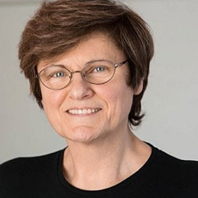
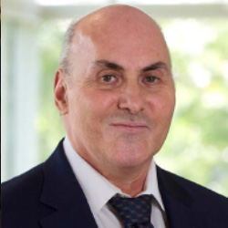
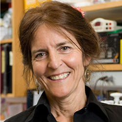
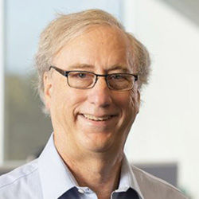
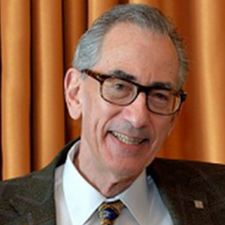
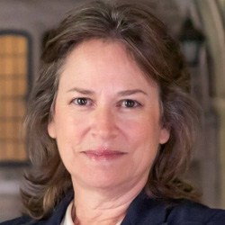
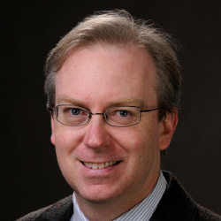
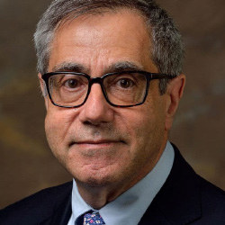

Recent Recipients
2019-2021
Katalin Kariko, PhD (2021)
Professor of Ophthalmology at the Perelman School of Medicine, University of Pennsylvania
For establishing the platform for constructing stable and safe mRNA to enable gene-induced immune response within the human body
Katalin Kariko is senior vice president at BioNTech SE, Mainz, Germany from 2013. She is also adjunct professor at the Perelman School of Medicine, University of Pennsylvania, where she worked for 24 years. She received her PhD in biochemistry from University of Szeged, Hungary, in 1982 when she came to the US for postdoctoral research at Temple University. For four decades, her research has been focusing on RNA-mediated mechanisms with the ultimate goal of developing in vitro-transcribed mRNA for protein therapy. She investigated RNA-mediated immune activation and co-discovered that nucleoside modifications suppress immunogenicity of RNA. This groundbreaking work unlocked the opportunity for the therapeutic use of mRNA. She co-founded and served as CEO of RNARx, a company dedicated to develop nucleoside-modified mRNA for therapy. Her patents, co-invented with Drew Weissman, on nucleoside-modified uridines in mRNA have been used to create the FDA-approved COVID-19 mRNA vaccines by BioNTech/Pfizer and Moderna/NIH. For her achievement she received many prestigious awards, including the Reichstein Medal, Princess Asturias Award, the Vilcek Prize, the Paul Ehrlich Prize, the Breakthrough prize of Germany, and the Lasker-DeBakey Award.
Drew Weissman, MD, PhD (2021)
Professor of Medicine at the Perelman School of Medicine, University of Pennsylvania
For the development of the mRNA approach to enable gene-induced immune response within the human body
 Drew Weissman is a professor of Medicine at the Perelman School of Medicine, University of Pennsylvania. He received his graduate degrees from Boston University School of Medicine. Weissman, in collaboration with Katalin Kariko, discovered the ability of modified nucleosides in RNA to suppress activation of innate immune sensors and increase the translation of mRNA containing certain modified nucleosides. The nucleoside-modified mRNA-lipid nanoparticle vaccine platform Weissman’s lab created is used in the first 2 approved COVID-19 vaccines by Pfizer/BioNTech and Moderna. They continue to develop other vaccines that induce potent antibody and T cell responses with mRNA–based vaccines. Weissman’s lab also develops methods to replace genetically deficient proteins, edit the genome, and specifically target cells and organs with mRNA-LNPs, including lung, heart, brain, CD4+ cells, all T cells, and bone marrow stem cells.
The idea of creating a vaccine with messenger RNA, or mRNA, the substance that helps to convert the genetic code in DNA into proteins, goes back decades. However, early efforts to use mRNA for treating or preventing various diseases failed due to the instability and inflammatory activity of mRNA. At the University of Pennsylvania Medical School, Katalin Kariko and Drew Weissman found that certain forms of RNA contained modifications or changes to the chemical structure of the coding letters or nucleosides in RNA and they were not inflammatory, thus suggesting that modifying the nucleosides might suppress the inflammatory nature of RNA. Their seminal work revealed that one of the four building blocks of RNA, uridine, was responsible for triggering inflammation in mice. Using modified nucleotides, they synthesized protein-encoding long mRNAs containing modified nucleosides, including a modified uridine - pseudouridine. Kariko and Weissman found that mRNA containing pseudouridines were non-inflammatory. Most importantly, the pseudouridine-containing mRNA made much more of the protein. They also demonstrated that modified mRNA that coded for a hormone erythropoietin that makes red blood cells was functional when given to mice and Rhesus macaques, opening the potential to use mRNA for the treatment of medical disorders. Together with their colleagues at Penn, they used modified mRNA formulated in lipid nanoparticles to make vaccines against a variety of different viruses. This modified mRNA was successfully used to create the first 2 vaccines for COVID-19 by BioNTech/Pfizer and Moderna/NIH. The novel mRNA platform not only accelerates development of new vaccines and other drugs, but because they use the human body to generate the medicine or vaccine, it makes mRNA-based medicine safer, easier to produce, and more affordable.
Jean Bennett, MD, PhD (2020)
Professor of Ophthalmology at the Perelman School of Medicine, University of Pennsylvania
For developing gene therapies for curing retinal degeneration and ocular diseases
Jean Bennett’s primary focus is on gene therapy translational studies. She received her PhD degree in Zoology/Cell and Developmental Biology from the University of California, Berkeley and her MD degree from Harvard Medical School. She completed fellowships at the University of California, San Francisco, at Yale University and at Johns Hopkins University School of Medicine. Bennett joined the faculty at the University of Pennsylvania School of Medicine in 1992 and was promoted to Professor of Ophthalmology and Cell and Developmental Biology in 2004. She holds the F.M. Kirby Chair in Ophthalmology at the Scheie Eye Institute and is also the Co-Director and Founder of the Center for Advanced Retinal and Ophthalmic Therapeutics (CAROT) at the University of Pennsylvania Perelman School of Medicine. Bennett has established a true “from bench to bedside” program, and thus she is familiar with the steps necessary to go from proof-of-concept all the way to those necessary for testing of safety and efficacy in humans with blinding disease. She was the leader of a team that translated reversal of blindness in animal models to demonstration of efficacy and safety in children and adults. Her team was the first to enroll pediatric subjects with a non-lethal disease as gene therapy participants. Bennett continues to develop gene-based therapies for other retinal degenerative diseases and to tackle some of the limitations of current gene therapy technologies. She mentors scientists and physicians at all career stages, serves on a number of advisory panels, and is an active member of non-profit patient-oriented foundations. ss Asturias Award, the Vilcek Prize, the Paul Ehrlich Prize, the Breakthrough prize of Germany, and the Lasker-DeBakey Award.
William DeGrado, PhD (2020)
Professor of Pharmaceutical Chemistry at the University of California
For synthesis of novel peptides and proteins and the development of antimicrobial peptides
William (Bill) DeGrado’s work focuses on the design of small molecule drugs, peptides, and proteins to address biological and mechanistic questions. Since 2011, DeGrado has been a professor in the Department of Pharmaceutical Chemistry at the University of California San Francisco. Prior to UCSF, he was a member of DuPont Central Research and DuPont Merck Pharmaceutical Company from 1981 to 1996, and then the Raiziss Professor in the Department of Biochemistry and Biophysics at the University of Pennsylvania (1996 – 2011). DeGrado graduated from Kalamazoo College in 1978, received his PhD in organic chemistry from the University of Chicago (1981), and right after joined DuPont Central Research. He is a member of the National Academy of Sciences, the American Academy of Arts and Sciences and the National Academy of Inventors. DeGrado showed that proteins can be designed from first principles. He pioneered the approach of de novo protein design, which critically tests our understanding of protein folding and function while also laying the groundwork for the design of molecules with enhanced properties. Among his many seminal contributions is the design of small molecule mimics of antimicrobial peptides that are in clinical trials for antibiotic-resistant bacterial infections.
Michael L. Klein, PhD (2020)
Laura H. Carnell Professor of Science Theory/Computation at Temple University
For developing algorithms for computational simulation of biological systems and the development of antimicrobial peptides
Michael L. Klein received his BSc (1961) and PhD (1964) degrees in Chemistry from the University of Bristol UK, after which he did postdoctoral research in Italy (Physics), UK (Chemistry), and USA (Physics). In 1968, Klein joined the Chemistry Division of the NRCC in Ottawa, Canada, where he rose through the ranks and was elected a Fellow of the Royal Society of Canada (1984). In 1987, Klein joined the University of Pennsylvania as Professor of Chemistry. In 1993 he was appointed Director of the Laboratory for Research on the Structure of Matter and the Hepburn Professor of Physical Science. In 2009, he moved to Temple University as the Laura H. Carnell Professor of Science and Director of the Institute for Computational Molecular Science. In 2013, Klein was appointed Dean of Temple’s College of Science & Technology which he has helped transform into becoming a leader of theoretical, experimental, and computational research in multiple fields of science. Klein is passionate about creating programs to engage with the local middle and high school students and their teachers. He currently serves on science advice panels in North America, Europe, and Asia. Klein’s many honors and awards include being elected a Fellow of the Royal Society of London (2003), a member of the US National Academy of Sciences (2009), and an Honorary Fellow of Trinity College Cambridge (2013). He is most proud of being a STEM champion for the youth of Philadelphia (2015). Klein’s current research interests span from physical chemistry to soft matter physics, as well as from biophysics to chemical biology and molecular therapeutics.
Emily A. Carter, PhD (2019)
Executive Vice Chancellor and Provost (EVCP), and Distinguished Professor of Chemical and Biomolecular Engineering, at UCLA
For innovation in theoretical and computation design of new materials
Emily Carter is the Executive Vice Chancellor and Provost (EVCP) and Distinguished Professor of Chemical and Biomolecular Engineering at UCLA. She earned a bachelor’s degree in Chemistry from UC Berkeley and a Ph.D. in Chemistry from Caltech. After a brief postdoc at the University of Colorado, Boulder, she joined the UCLA chemistry and biochemistry faculty. She moved to Princeton University in 2004, serving as Princeton’s Dean of Engineering and Applied Science from 2016-2019, where she spearheaded major research, education, outreach, and diversity initiatives before returning to UCLA as EVCP in September 2019. Dr. Carter has spent her career developing and applying quantum mechanics methods, and in the last dozen years has been focused solely on the design of materials for sustainable energy. The author of over 400 publications, Dr. Carter has delivered over 550 invited and plenary lectures worldwide and has served on advisory boards spanning a wide range of disciplines. She is the recipient of numerous honors, including election to the National Academy of Sciences, the American Academy of Arts and Sciences, National Academy of Inventors, and the National Academy of Engineering.
Charles L. Kane, PhD (2019)
Christopher H. Browne Distinguished Professor of Physics at the University of Pennsylvania
For discovery of a new class of materials known as topological insulators
 Charles Kane is Christopher H. Browne Distinguished Professor of Physics at the University of Pennsylvania. He received his bachelor’s degree in physics from the University of Chicago and a Ph.D. in physics from MIT. After a postdoc at IBM’s T.J. Watson Research Center, he joined the faculty of the University of Pennsylvania in 1991. Dr. Kane is a theoretical condensed matter physicist who is known for his work characterizing quantum electronic states of matter. Recently his research has focused on the theory of topological insulators and their generalizations. He is a Fellow of the American Physical Society and a member of the National Academy of Sciences. His work on topological insulators has been recognized by several awards, including the Oliver Buckley Prize, the P.A.M. Dirac Medal, the Physics Frontiers Prize, the Benjamin Franklin Medal, the Breakthrough Prize in Fundamental Physics and the BBVA Frontiers of Knowledge Award.
Eugene J. Mele , PhD (2019)
Christopher H. Browne Distinguished Professor of Physics and Astronomy at the University of Pennsylvania
For discovery of a new class of materials known as topological insulators
 Eugene Mele is Christopher H. Browne Distinguished Professor of Physics and Astronomy at the University of Pennsylvania. He received his bachelor’s degree in Physics from Saint Joseph’s University and his Ph.D. in Physics from the Massachusetts Institute of Technology. He worked in industry as Associate Scientist at the Xerox Webster Research Center before joining the faculty at the University of Pennsylvania. Dr. Mele is a Fellow of the American Physical Society and a member of the National Academy of Sciences. He is a recipient of the Europhysics Prize of the European Physical Society, the Franklin Medal in Physics, the Breakthrough Prize in Fundamental Physics and the BBVA Frontiers of Knowledge Award in Basic Sciences. He has received the Ira Abrams Memorial Award and the Christian R. and Mary F. Lindback Award for distinguished teaching at the University of Pennsylvania.